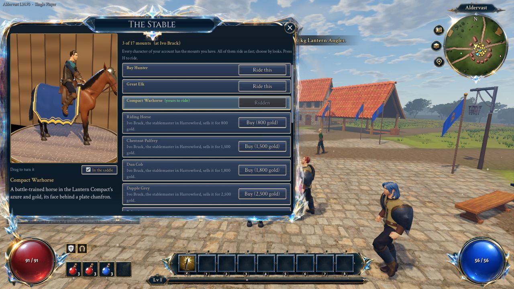
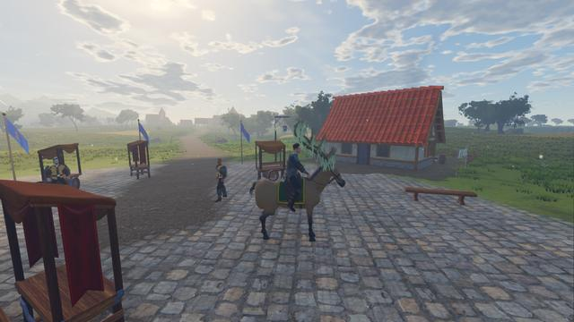
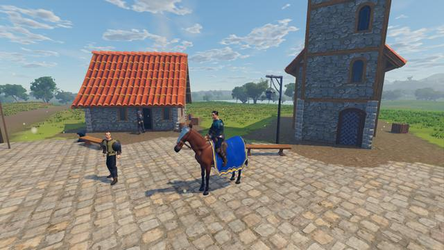
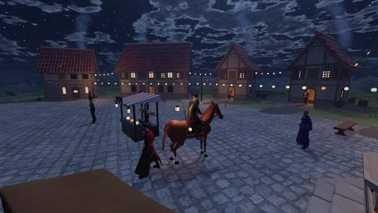

Riding Horse
From Ivo BrackA sound road horse from Ivo's paddock. No two are alike; this one is yours.
- Found
- Ivo Brack, Harrowford's stablemaster, for 800 gold
The seventeen mounts of the Stable, and where to find each one.
Mounts belong to your account, as pets do (1.14.93): every character you have owns every mount you have, and each rides the one it picks. All of them run at the same pace, ten metres a second against five or six on foot, so you choose by looks. Mount up with the mount key; you get down at a dungeon or battleground door, and a rider who falls is thrown from the saddle.
The Stable (F3, or Mounts in the menu, or "Show me the stable" at Ivo Brack, the Battlemaster or Mabyn Tallow) lists every mount, yours first, and where to find the rest. Pick one with Ride this; a turntable in a stall shows it, with you in the saddle if you like, and you can drag it round. You can change mounts while riding, and the new one is under you at once. The elk and the draught horse have their own saddle, stirrups, bridle and reins; barded horses wear a caparison to the knees and a steel chanfron. A Riding Horse bought before 1.14.93 is in your Stable, and every character on the account has it.

A sound road horse from Ivo's paddock. No two are alike; this one is yours.
A deep bay with black points, bred in the Vale for long days behind the hounds.
A red-gold palfrey with an easy amble, the kind a reeve rides to market and back.
A sandy cob with a stripe down its back and the patience of a hill farmer.
A grey dappled like rain on a pond, whiter every year it lives.
A gold horse with a flaxen mane. Ivo keeps it brushed and will not say who it was meant for.
A tall black horse with one white sock and no fear of fire, steel or the dark.
A great bay draught horse off the Harrowford farms, broad as a door and kind as bread.
A bull elk of the Thornwood, raised from a calf by Ivo's brother. It goes where the roads don't.

A battle-trained horse in the Lantern Compact's azure and gold, its face behind a plate chanfron.

A black horse barded in the Emberwatch's orange and soot, as the Kiln Road's riders were.
A grey barded in gold, given to those whose honour in battle has reached sixty thousand.
A hart of the mere's silver with antlers of clear glass. It came to the rider who broke all four halls.
A draught horse of the far side's thread, as the Treadle was. The Loom remembers its friends.
One of the Forty, in the shape of the beast it passed on the pass, that chose to stay this side of the mere.
An elk of Elderhorn's line, moss on its antlers and the Glade's quiet in its stride.
A chestnut decked for the Long Night, small lanterns at the saddle that light themselves at dusk.

A strong bay in the bounty-riders' red barding, trimmed in iron, with a roll of notices behind the saddle.